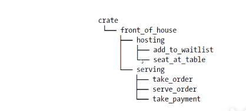

Package、Crate、定义 Module
Rust 的代码组织
- 代码组织主要包括
- 模块系统
- Package（包）：Cargo 的特性，让你构建、测试、共享 crate
- Crate（单元包）：一个模块树、它可产生一个 libary 或可执行文件
- Module（模块）、use：让你控制代码的组织、作用域、私有路径
- Path（路径）：为 struct、function 或 module 等项命名的方式
Package 和 Crate
- Crate 类型
- binary
- libary
- Crate Root
- 是源代码文件
- Rust 编译器从这里开始，组成你的 Crate 的根 Module
- 一个 Package
- 包含一个 Cargo.toml，它描述了如何构建这些 Crates
- 只能包含 0-1 个 libary crate
- 可以包含任意数量的 binary crate
- 但必须至少包含一个 crate（libary 或 binary）
Cargo 的惯例
- 使用
cargo new project-name创建 Rust 项目 src/main.rs- binary crate 的 crate root
- crate 名与 package 名相同
src/lib.rs- package 包含一个 libary crate
- libary crate 的 crate root
- crate 名与 package 名相同
- Cargo 把 crate root 文件交给 rustc 来构建 libary 或 binary
- 一个 Package 可以同时包含 src/main.rs 和 src/lib.rs
- 一个 binary crate，一个 libary crate
Crate 的作用
- 将相关功能组合到一个作用域内，便于在项目间进行共享
- 防止命名冲突
- 例如 rand crate，访问它的功能需要通过它的名字：rand
定义 Module 来控制作用域和私有性
- Module
- 在一个 crate 内，将代码进行分组
- 增加可读性，易于复用
- 控制项目（item）的私有性，public、private
- 建立 Module
- mod 关键字
- 可嵌套
- 可包含其它项（struct、enum、常量、trait、函数等）的定义
src/lib.rs 文件内容
1 | mod front_of_house { |
Module
src/main.rs和src/lib.rs叫做 crate roots
* 这两个文件（任意一个）的内容形成了名为 crate 的模块，位于整个模块树的根部

路径（Path）
- 为了在 Rust 的模块中找到某个条目，需要使用路径
- 路径的两种形式
- 绝对路径：从 crate root 开始，使用 crate 名或字面值 crate
- 相对路径：从当前模块开始，使用 self，super 或当前模块标识符
- 路径至少由一个标识符组成，标识符之间使用
::
在 src/lib.rs 文件中有如下的内容，我们创建了一个 front_of_hours 模块，在该模块中有一个 hosting 子模块并包含了 add_to_waitlist 函数，之后我们使用绝对路径与相对路径来进行调用。在项目中使用绝对路径还是相对路径取决于代码的条目。
下面代码会报错，因为 mod 是私有的
1 | mod front_of_hours { |
私有边界（privacy boundary）
- 模块不仅可以组织代码，还可以定义私有边界
- 如果想把函数或 struct 等设为私有，可以将它放在某个模块中
- Rust 中所有的条目（函数、方法、struct、enum、模块、常量）默认是私有的
- 父级模块无法访问子模块中的私有条目
- 子模块里可以使用所有祖先模块中的条目
pub 关键字
- 使用 pub 关键字来来将某些条目标记为公共的
下面代码将 hosting 模块与 add_to_waitlist 函数定义为 pub，代码就可以正常的执行了，这会产生一个疑问，为什么 front_of_hours 是私有的，而 hosting 是公有的，它们还可以正常调用呢？因为调用方都是该文件里面的根级，如果都是文件根级，那么它们之间就可以互相调用。
1 | mod front_of_hours { |
super 关键字
- super：用来访问父级模块路径中的内容，类似文件系统的
..
1 | fn serve_order() {} |
pub struct
- pub 放在 struct 前
- struct 是公共的
- struct 的字段默认是私有的
- struct 的字段需要单独设置 pub 来变成共有
1 | mod back_of_house { |
pub enum
- pub 放在 enum 前
- enum 是公共的
- enum 的变体也都是公共的
1 | mod back_of_house { |
use 关键字
可以使用 use 关键字将路径导入到作用域内
- 仍遵循私有性规则，不可以调用私有函数
使用 use 来指定相对路径
把 crate 去掉就可以了；
use front_of_hours::hosting;
使用 use 关键字引入一个模块时，我们一样无法调用该模块中的私有函数。
当然我们也可以引入函数，比如 use crate::front_of_hours::hosting::add_to_waitlist; 之后通过 add_to_waitlist 直接调用即可，但是这种做法是有弊的，如果我们引入的函数很多，那么分不清该函数处于那个模块中，一般情况下都是来引入函数父模块。
1 | mod front_of_hours { |
use 的习惯用法
函数：将函数的父级模块引入作用域（指定到父级）
struct、enum、其它：指定完整路径（指定到本身）
1
2
3
4
5
6use std::collections::HashMap;
fn main() {
let mut map = HashMap::new();
map.insert(1, 2);
}同名条目：指定到父级
1
2
3
4
5
6use std::fmt;
use std::io;
fn f1() -> fmt::Result {}
fn f2() -> io::Result {}
fn main() {}
as 关键字
- as 关键字可以为引入的路径指定本地的别名
1 | use std::fmt::Result; |
pub use
- 使用 use 将路径（名称）导入到作用域内后，该名称在此作用域内是私有的
- pub use：重导出
- 将条目引入作用域
- 该条目可以被外部代码引入到它们的作用域
下面我们将 hosting 模块引入，hosting 在此作用域中是可用的，外部代码是看不见的，对于函数我们可以加上 pub 关键字来实现，而 use 也能通过加上 pub 关键字，这样外部代码就可以访问到了 hosting 模块（引入了 hosting ，然后又把它给导出了），当我们相对外暴露代码的时候，就可以使用 pub use
1 | mod front_of_hours { |
使用外部包
- Cargo.toml 添加依赖包（package）
- cargo 会从 https://crates.io 下载可用的 package
- use 将特定条目引入作用域
- 标准库（std）也被当做外部包
- 不需要修改 Cargo.toml 来包含 std
- 需要使用 use 将 std 中特定条目引入到当前作用域
Cargo.toml
1 | ... |
1 | use rand::Rang; |
修改 cargo 镜像源
- linux 使用
which cargo命令找到 cargo 位置 - windows 使用
where cargo命令找到 cargo 位置 - 进入到对应的
.cargo目录下 - 新建/修改config 文件，添加如下内容
1 | [source.crates-io] |
嵌套路径
使用嵌套路径清理大量的 use 语句
- 如果使用同一个包或模块下的多个条目
- 可使用嵌套路径在同一行内将上述条目进行引入
- 路径相同的部分::{路径差异的部分}
- 如果两个 use 路径之一是另一个子路径
- 使用 self
1 | use std::{cmp::Ordering, io}; |
如果我们需要使用 std::io 与 std::io::Write 包，那么需要这样使用
1 | use std::io{self, Write}; |
通配符（*）
- 使用
*可以把路径中所有的公共条目都引入到作用域 - 这种方式需要谨慎使用
- 应用场景：
- 测试，将所有被测试代码引入到 tests 模块
- 有时被用于预导入（prelude）模块
1 | use std::collections::*; |
将模块拆分为不同文件
在 rust 中可以将模块内容移动到其他文件
- 模块定义时，如果模块名后边是
;，而不是代码块- Rust 会从与模块同名的文件中加载内容
- 模块树的结构不会发生变化
- 随着模块逐渐变大，该技术让你可以把模块的内容移动到其它文件中
使用了 ; 那么就会在 src 目录下找到对应名称的 rs 文件，也就是说 使用mod front_of_hours; 后会在 src 目录下找到 front_of_hours.rs 文件。
src/lib.rs
1 | mod front_of_hours; |
src/front_of_hours.rs
1 | pub mod hosting { |
如果我们需要将 hosting 模块分离出来话，那么需要在 src 下创建 front_of_hours 文件夹，之后创建 hosting.rs
src/lib.rs
1 | mod front_of_hours; |
src/front_of_hours.rs
1 | pub mod hosting; |
src/front_of_hours/hosting.rs
1 | pub fn add_to_waitlist() {} |